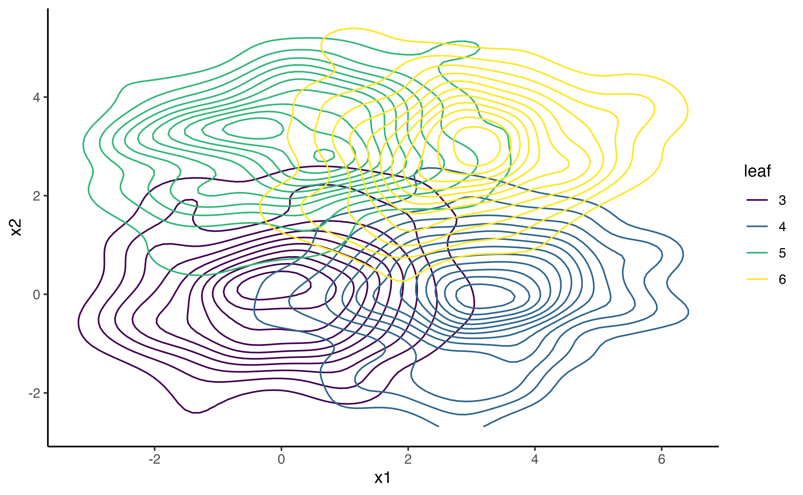

Focus parameters in SEM forests
Andreas M. Brandmaier
2023-04-06
Source:vignettes/semforest-focus.Rmd
semforest-focus.RmdWe first generate a mixture of bivariate normal distributions. The
distributions differ only by their x- and y-displacement, that is, by
their mean values. There are two predictors grp1 and
grp2 which predict the differences in means.
grp1 predicts differences in the first dimension and
grp2 predicts differences in the second dimension. Without
focus parameter, both predictors are needed to distinguish all four
groups. If one of the two means is chosen as a focus parameter, only one
of the two predictors is important.
library(semtree)
#> Loading required package: OpenMx
set.seed(123)
N <- 1000
grp1 <- factor(sample(x = c(0,1), size=N, replace=TRUE))
grp2 <- factor(sample(x = c(0,1), size=N, replace=TRUE))
noise <- factor(sample(x = c(0,1),size=N, replace=TRUE))
Sigma <- matrix(byrow=TRUE,
nrow=2,c(2,0.2,
0.2,1))
obs <- MASS::mvrnorm(N,mu=c(0,0),
Sigma=Sigma)
obs[,1] <- obs[,1] + ifelse(grp1==1,3,0)
obs[,2] <- obs[,2] + ifelse(grp2==1,3,0)
df.biv <- data.frame(obs, grp1, grp2, noise)
names(df.biv)[1:2] <- paste0("x",1:2)
manifests<-c("x1","x2")The following code specifices a bivariate Gaussian model with five parameters:
model.biv <- mxModel("Bivariate_Model",
type="RAM",
manifestVars = manifests,
latentVars = c(),
mxPath(from="x1",to=c("x1","x2"),
free=c(TRUE,TRUE), value=c(1.0,.2) ,
arrows=2, label=c("VAR_x1","COV_x1_x2") ),
mxPath(from="x2",to=c("x2"), free=c(TRUE),
value=c(1.0) , arrows=2, label=c("VAR_x2") ),
mxPath(from="one",to=c("x1","x2"), label=c("mu1","mu2"),
free=TRUE, value=0, arrows=1),
mxData(df.biv, type = "raw")
);
result <- mxRun(model.biv)
#> Running Bivariate_Model with 5 parameters
summary(result)
#> Summary of Bivariate_Model
#>
#> free parameters:
#> name matrix row col Estimate Std.Error A
#> 1 VAR_x1 S x1 x1 4.0583666 0.18149512
#> 2 COV_x1_x2 S x1 x2 0.1970528 0.11385399
#> 3 VAR_x2 S x2 x2 3.1848900 0.14243121
#> 4 mu1 M 1 x1 1.4858354 0.06370452
#> 5 mu2 M 1 x2 1.4551364 0.05643442
#>
#> Model Statistics:
#> | Parameters | Degrees of Freedom | Fit (-2lnL units)
#> Model: 5 1995 8231.944
#> Saturated: 5 1995 NA
#> Independence: 4 1996 NA
#> Number of observations/statistics: 1000/2000
#>
#> Information Criteria:
#> | df Penalty | Parameters Penalty | Sample-Size Adjusted
#> AIC: 4241.944 8241.944 8242.004
#> BIC: -5549.028 8266.483 8250.602
#> CFI: NA
#> TLI: 1 (also known as NNFI)
#> RMSEA: 0 [95% CI (NA, NA)]
#> Prob(RMSEA <= 0.05): NA
#> To get additional fit indices, see help(mxRefModels)
#> timestamp: 2023-04-06 12:48:23
#> Wall clock time: 0.05384207 secs
#> optimizer: SLSQP
#> OpenMx version number: 2.21.1
#> Need help? See help(mxSummary)This is how the data look in a 2D space:
df.biv.pred <- data.frame(df.biv,
leaf=factor(as.numeric(df.biv$grp2)*2+as.numeric(df.biv$grp1)))
ggplot(data = df.biv.pred, aes(x=x1, y=x2, group=leaf))+
geom_density_2d(aes(colour=leaf))+
viridis::scale_color_viridis(discrete=TRUE)+
theme_classic()
Now, we choose the mean of the second dimension mu2 as
focus parameter. We expect that only predictor grp2. This
is what we see in a single tree.
fp <- "mu2" # predicted by grp2
#fp <- "mu1" # predicted by grp1
tree.biv <- semtree(model.biv, data=df.biv, constraints = list(focus.parameters=fp))
#> > Model was not run. Estimating parameters now.
#>
Beginning initial fit attempt
Fit attempt 0, fit=8231.94380334365, new current best! (was 14702.355897412)
Beginning initial fit attempt
Fit attempt 0, fit=8231.94380334351, new current best! (was 8231.94380334365)
Beginning initial fit attempt
Fit attempt 0, fit=3414.98309750161, new current best! (was 3992.43081809465)
Beginning initial fit attempt
Fit attempt 0, fit=3671.31100048705, new current best! (was 4239.51298524885)
[32m✔
[39m Tree construction finished [took 2s].
plot(tree.biv)
Now, we are repeating the same analysis in a forest.
forest <- semforest(model.biv, data=df.biv,
constraints = list(focus.parameters=fp),
control=semforest.control(num.trees=10, control=semtree.control(method="score",alpha=1)))
#>
Beginning initial fit attempt
Fit attempt 0, fit=8231.94380334365, new current best! (was 14702.355897412)
Beginning initial fit attempt
Fit attempt 0, fit=5178.69275033253, new current best! (was 5180.52740984603)
Beginning initial fit attempt
Fit attempt 0, fit=2242.31648873494, new current best! (was 2598.56536646728)
Beginning initial fit attempt
Fit attempt 0, fit=1077.7538022621, new current best! (was 1186.33974611505)
Beginning initial fit attempt
Fit attempt 0, fit=559.661273239017, new current best! (was 560.599391939167)
Beginning initial fit attempt
Fit attempt 0, fit=515.994343618014, new current best! (was 517.154410322937)
Beginning initial fit attempt
Fit attempt 0, fit=944.066111945143, new current best! (was 1055.97674261989)
Beginning initial fit attempt
Fit attempt 0, fit=2207.90573993569, new current best! (was 2580.12738386525)
Beginning initial fit attempt
Fit attempt 0, fit=871.021088316261, new current best! (was 1010.70215135666)
Beginning initial fit attempt
Fit attempt 0, fit=444.674516077842, new current best! (was 446.501442326911)
Beginning initial fit attempt
Fit attempt 0, fit=422.307171560515, new current best! (was 424.51964598935)
Beginning initial fit attempt
Fit attempt 0, fit=1076.14270906084, new current best! (was 1197.20358857903)
Beginning initial fit attempt
Fit attempt 0, fit=504.405633265828, new current best! (was 505.898018540473)
Beginning initial fit attempt
Fit attempt 0, fit=569.100934853373, new current best! (was 570.244690520369)
[32m✔
[39m Tree construction finished [took 2s].
#>
Beginning initial fit attempt
Fit attempt 0, fit=5160.79825542994, new current best! (was 5163.81680052886)
Beginning initial fit attempt
Fit attempt 0, fit=2604.98207089739, new current best! (was 2606.0029636953)
Beginning initial fit attempt
Fit attempt 0, fit=1222.44830811443, new current best! (was 1337.74521959935)
Beginning initial fit attempt
Fit attempt 0, fit=552.766803013598, new current best! (was 637.512905188631)
Beginning initial fit attempt
Fit attempt 0, fit=486.409559895815, new current best! (was 584.935402925801)
Beginning initial fit attempt
Fit attempt 0, fit=1140.0635095491, new current best! (was 1267.23685129804)
Beginning initial fit attempt
Fit attempt 0, fit=452.900183571944, new current best! (was 537.371670837026)
Beginning initial fit attempt
Fit attempt 0, fit=516.337595533136, new current best! (was 602.691838712076)
Beginning initial fit attempt
Fit attempt 0, fit=2553.80587579795, new current best! (was 2554.79529173463)
Beginning initial fit attempt
Fit attempt 0, fit=1032.60566766376, new current best! (was 1210.36542736626)
Beginning initial fit attempt
Fit attempt 0, fit=474.187228851012, new current best! (was 526.755681493367)
Beginning initial fit attempt
Fit attempt 0, fit=463.276896681961, new current best! (was 505.849986170391)
Beginning initial fit attempt
Fit attempt 0, fit=1179.03242563194, new current best! (was 1343.44044843169)
[32m✔
[39m Tree construction finished [took 2s].
#>
Beginning initial fit attempt
Fit attempt 0, fit=5210.83471029186, new current best! (was 5214.32140360433)
Beginning initial fit attempt
Fit attempt 0, fit=2278.11329589667, new current best! (was 2540.70380148129)
Beginning initial fit attempt
Fit attempt 0, fit=953.243936240488, new current best! (was 1120.99401238131)
Beginning initial fit attempt
Fit attempt 0, fit=472.156232648653, new current best! (was 474.002971313868)
Beginning initial fit attempt
Fit attempt 0, fit=477.365978081111, new current best! (was 479.240964926621)
Beginning initial fit attempt
Fit attempt 0, fit=992.970117040024, new current best! (was 1157.11928351536)
Beginning initial fit attempt
Fit attempt 0, fit=510.210813716902, new current best! (was 511.371865325914)
Beginning initial fit attempt
Fit attempt 0, fit=480.27179005808, new current best! (was 481.598251714111)
Beginning initial fit attempt
Fit attempt 0, fit=2431.23208369377, new current best! (was 2670.13090881057)
Beginning initial fit attempt
Fit attempt 0, fit=944.907006562229, new current best! (was 1149.48707185235)
Beginning initial fit attempt
Fit attempt 0, fit=454.206044862329, new current best! (was 454.517384553573)
Beginning initial fit attempt
Fit attempt 0, fit=490.074593585721, new current best! (was 490.389622008653)
Beginning initial fit attempt
Fit attempt 0, fit=1088.77744983933, new current best! (was 1281.74501184143)
Beginning initial fit attempt
Fit attempt 0, fit=478.388328504016, new current best! (was 481.616873870189)
Beginning initial fit attempt
Fit attempt 0, fit=605.180523742488, new current best! (was 607.160575969145)
[32m✔
[39m Tree construction finished [took 3s].
#>
Beginning initial fit attempt
Fit attempt 0, fit=5227.94640296686, new current best! (was 5228.96755968305)
Beginning initial fit attempt
Fit attempt 0, fit=2211.60405055463, new current best! (was 2590.92067965432)
Beginning initial fit attempt
Fit attempt 0, fit=994.659874485375, new current best! (was 1126.56279997553)
Beginning initial fit attempt
Fit attempt 0, fit=513.655835999792, new current best! (was 515.462424769327)
Beginning initial fit attempt
Fit attempt 0, fit=476.870174503799, new current best! (was 479.197449716048)
Beginning initial fit attempt
Fit attempt 0, fit=969.625662968156, new current best! (was 1085.0412505791)
Beginning initial fit attempt
Fit attempt 0, fit=497.398315208078, new current best! (was 498.358075565872)
Beginning initial fit attempt
Fit attempt 0, fit=470.347883255093, new current best! (was 471.267587402283)
Beginning initial fit attempt
Fit attempt 0, fit=2264.27275418977, new current best! (was 2637.02572331254)
Beginning initial fit attempt
Fit attempt 0, fit=834.872275343585, new current best! (was 1015.17540962256)
Beginning initial fit attempt
Fit attempt 0, fit=1112.81761931247, new current best! (was 1249.09734456721)
[32m✔
[39m Tree construction finished [took 2s].
#>
Beginning initial fit attempt
Fit attempt 0, fit=5184.86750643105, new current best! (was 5186.59551204225)
Beginning initial fit attempt
Fit attempt 0, fit=2190.06675305854, new current best! (was 2578.71640954721)
Beginning initial fit attempt
Fit attempt 0, fit=962.930428409359, new current best! (was 1079.57269374054)
Beginning initial fit attempt
Fit attempt 0, fit=468.33275203863, new current best! (was 469.737414941774)
Beginning initial fit attempt
Fit attempt 0, fit=491.665392322266, new current best! (was 493.193013467588)
Beginning initial fit attempt
Fit attempt 0, fit=996.718293328229, new current best! (was 1110.494059318)
Beginning initial fit attempt
Fit attempt 0, fit=473.874089467474, new current best! (was 474.817038428952)
Beginning initial fit attempt
Fit attempt 0, fit=521.101689046883, new current best! (was 521.901254899277)
Beginning initial fit attempt
Fit attempt 0, fit=2264.40129646849, new current best! (was 2606.15109688384)
Beginning initial fit attempt
Fit attempt 0, fit=907.393519012246, new current best! (was 1056.63309157003)
Beginning initial fit attempt
Fit attempt 0, fit=470.873133305341, new current best! (was 474.195617711923)
Beginning initial fit attempt
Fit attempt 0, fit=428.672450216341, new current best! (was 433.197901300323)
Beginning initial fit attempt
Fit attempt 0, fit=1080.41758875866, new current best! (was 1207.76820489846)
[32m✔
[39m Tree construction finished [took 2s].
#>
Beginning initial fit attempt
Fit attempt 0, fit=5233.6860426552, new current best! (was 5234.28728765404)
Beginning initial fit attempt
Fit attempt 0, fit=2160.53058296461, new current best! (was 2527.08471422786)
Beginning initial fit attempt
Fit attempt 0, fit=913.538934322541, new current best! (was 1022.18308196766)
Beginning initial fit attempt
Fit attempt 0, fit=496.033504384377, new current best! (was 497.588481509527)
Beginning initial fit attempt
Fit attempt 0, fit=413.81323637295, new current best! (was 415.950452813015)
Beginning initial fit attempt
Fit attempt 0, fit=1034.35394048896, new current best! (was 1138.34750099695)
Beginning initial fit attempt
Fit attempt 0, fit=480.000557544742, new current best! (was 480.799160645638)
Beginning initial fit attempt
Fit attempt 0, fit=552.810391753247, new current best! (was 553.554779843318)
Beginning initial fit attempt
Fit attempt 0, fit=2344.77232182562, new current best! (was 2706.60132842734)
Beginning initial fit attempt
Fit attempt 0, fit=1086.0603583297, new current best! (was 1086.54243824123)
Beginning initial fit attempt
Fit attempt 0, fit=1257.83999937805, new current best! (was 1258.22988358439)
[32m✔
[39m Tree construction finished [took 2s].
#>
Beginning initial fit attempt
Fit attempt 0, fit=5169.10647511961, new current best! (was 5172.24052601194)
Beginning initial fit attempt
Fit attempt 0, fit=2175.4182702524, new current best! (was 2543.78963516961)
Beginning initial fit attempt
Fit attempt 0, fit=943.426677734199, new current best! (was 1050.94979650767)
Beginning initial fit attempt
Fit attempt 0, fit=1033.08275760545, new current best! (was 1124.46847374473)
Beginning initial fit attempt
Fit attempt 0, fit=2251.49288930044, new current best! (was 2625.31683995)
Beginning initial fit attempt
Fit attempt 0, fit=1129.003574849, new current best! (was 1130.1882063524)
Beginning initial fit attempt
Fit attempt 0, fit=1120.21578554046, new current best! (was 1121.30468294804)
[32m✔
[39m Tree construction finished [took 1s].
#>
Beginning initial fit attempt
Fit attempt 0, fit=5142.53054532813, new current best! (was 5146.68490360203)
Beginning initial fit attempt
Fit attempt 0, fit=2268.62383556661, new current best! (was 2631.08538315803)
Beginning initial fit attempt
Fit attempt 0, fit=1011.88746419846, new current best! (was 1156.7178297401)
Beginning initial fit attempt
Fit attempt 0, fit=981.246419335622, new current best! (was 1111.90600582651)
Beginning initial fit attempt
Fit attempt 0, fit=476.195249885184, new current best! (was 479.36678613694)
Beginning initial fit attempt
Fit attempt 0, fit=498.91444862838, new current best! (was 501.879633198682)
Beginning initial fit attempt
Fit attempt 0, fit=2167.72797401224, new current best! (was 2511.44516217009)
Beginning initial fit attempt
Fit attempt 0, fit=873.759536512845, new current best! (was 1001.03528880694)
Beginning initial fit attempt
Fit attempt 0, fit=1051.66666194179, new current best! (was 1166.6926852053)
[32m✔
[39m Tree construction finished [took 2s].
#>
Beginning initial fit attempt
Fit attempt 0, fit=5195.1320107039, new current best! (was 5195.66917570974)
Beginning initial fit attempt
Fit attempt 0, fit=2104.84567333034, new current best! (was 2478.50501441455)
Beginning initial fit attempt
Fit attempt 0, fit=963.020840089404, new current best! (was 1064.05663711292)
Beginning initial fit attempt
Fit attempt 0, fit=503.583193541783, new current best! (was 505.644342492912)
Beginning initial fit attempt
Fit attempt 0, fit=454.559727721123, new current best! (was 457.376497596494)
Beginning initial fit attempt
Fit attempt 0, fit=943.873658389265, new current best! (was 1040.78903621743)
Beginning initial fit attempt
Fit attempt 0, fit=445.849116339368, new current best! (was 446.46623756131)
Beginning initial fit attempt
Fit attempt 0, fit=496.890381928505, new current best! (was 497.407420827955)
Beginning initial fit attempt
Fit attempt 0, fit=2339.11289064681, new current best! (was 2716.62699628935)
Beginning initial fit attempt
Fit attempt 0, fit=1132.80468694585, new current best! (was 1134.64451062303)
Beginning initial fit attempt
Fit attempt 0, fit=489.382732733569, new current best! (was 553.609099173937)
Beginning initial fit attempt
Fit attempt 0, fit=502.392120401274, new current best! (was 579.195587771909)
Beginning initial fit attempt
Fit attempt 0, fit=1202.95750454465, new current best! (was 1204.46838002379)
[32m✔
[39m Tree construction finished [took 2s].
#>
Beginning initial fit attempt
Fit attempt 0, fit=5225.90833703047, new current best! (was 5226.43048234669)
Beginning initial fit attempt
Fit attempt 0, fit=2199.60280249359, new current best! (was 2579.47831398517)
Beginning initial fit attempt
Fit attempt 0, fit=936.239975684897, new current best! (was 1067.02087084569)
Beginning initial fit attempt
Fit attempt 0, fit=1016.96933504167, new current best! (was 1132.58193164789)
Beginning initial fit attempt
Fit attempt 0, fit=471.216487183347, new current best! (was 471.865416520928)
Beginning initial fit attempt
Fit attempt 0, fit=544.589863907301, new current best! (was 545.103918520735)
Beginning initial fit attempt
Fit attempt 0, fit=2287.06429339587, new current best! (was 2646.4300230453)
Beginning initial fit attempt
Fit attempt 0, fit=974.636249473051, new current best! (was 1116.0259213964)
Beginning initial fit attempt
Fit attempt 0, fit=470.922597422801, new current best! (was 472.00065656348)
Beginning initial fit attempt
Fit attempt 0, fit=501.455298685865, new current best! (was 502.635592909573)
Beginning initial fit attempt
Fit attempt 0, fit=1040.33954685169, new current best! (was 1171.03837199947)
Beginning initial fit attempt
Fit attempt 0, fit=455.057462056803, new current best! (was 458.154350326122)
Beginning initial fit attempt
Fit attempt 0, fit=580.132404060171, new current best! (was 582.18519652557)
[32m✔
[39m Tree construction finished [took 2s].
#>
[32m✔
[39m Forest completed [took 21s]By default, we see that individual trees are fully grown (without a
p-value threshold). The first split is according to grp2
because it best explains the group differences. Subsequent splits are
according to grp1 even though the chi2 values are close to
zero. They only appear because there is no p-value-based stopping
criterion.
plot(forest$forest[[1]])
Now, let us investigate the permutation-based variable importance: